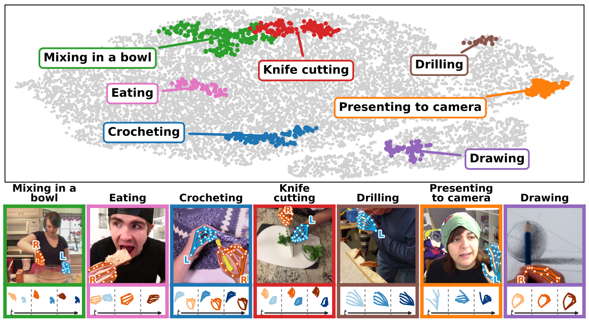
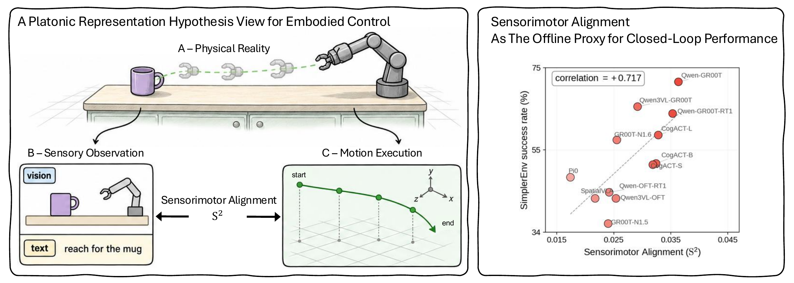
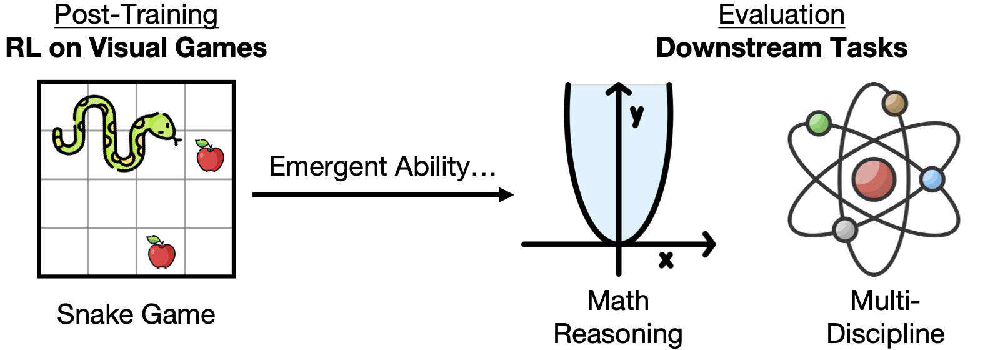
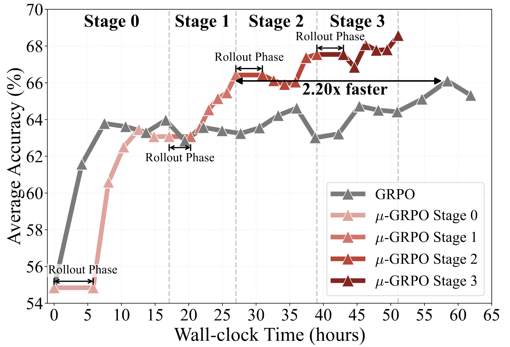
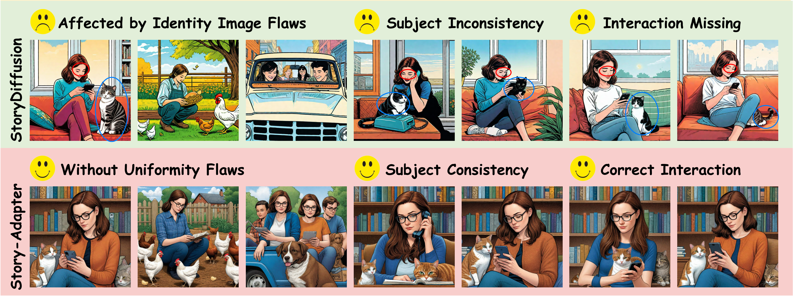
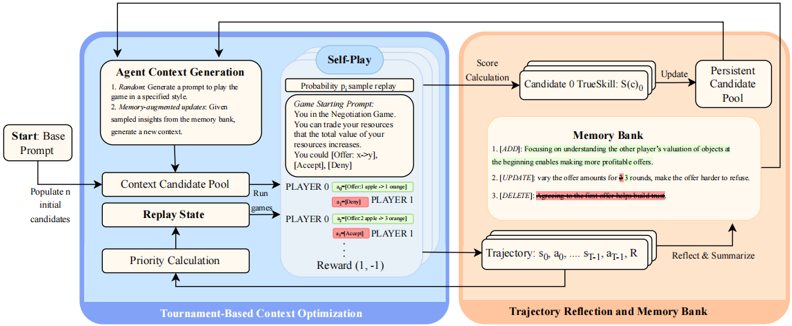

|
Yunfei Xie | 谢云飞 I'm a CS PhD student in the Department of Computer Science at Rice University, advised by Prof. Chen Wei. My research focuses on robot learning from human video and post-training for foundation models. I completed my bachelor's degree in the School of Artificial Intelligence and Automation at Huazhong University of Science & Technology. Previously, I was a research intern at Adobe Research, advised by Dr. Branislav Kveton, at VLAA, UC Santa Cruz, advised by Prof. Yuyin Zhou and Prof. Cihang Xie, and at CCVL, Johns Hopkins University, advised by Prof. Alan Yuille. I am open for collaborations in research. Email / Google Scholar / Github / Twitter / CV |
 Photo credit: my partner Xuan
Photo credit: my partner Xuan
|
News
- Sep. 2026: New work on robot learning: RoboTok and Sensorimotor Alignment (S²).
- May 2026: MEMO is accepted to ICML 2026!
- Apr. 2026: Excited to start a research internship at Adobe Research this summer!
- Feb. 2026: Play to Generalize and Story-Iter are accepted to ICLR 2026!
- Dec. 2025: Presented Play to Generalize at NeurIPS '25 at the Open AGI Symposium hosted by Sentient.
- Sep. 2025: Started my Ph.D. journey in Computer Science at Rice University, working with Prof. Chen Wei!
- Aug. 2025: Received the Lambda Research Grant ($10,000). Thank you, Lambda!
- Jan. 2025: MedTrinity-25M is accepted to ICLR 2025!
- Jul. 2024: From Pixels to Objects is accepted to ECCV 2024!
Selected Publications
For the full publication list, see Google Scholar.
|
 |
RoboTok: An Internet-Scale Data Engine for Human Demonstration Retrieval and Dexterous Manipulation Learning Preprint (under review), 2026 paper / website TL;DR: We retrieve manipulation-relevant human demonstrations from 100,000 web video clips using 3D hand-motion trajectories, improving dexterous-hand RL policies in Isaac Gym. |
|
 |
Sensorimotor Alignment: A Training-Free Predictor of Robot Policy Success Preprint (under review), 2026 website TL;DR: We compare model representations with recorded motion trajectories to assess robot-policy and backbone capability using a training-free offline score. |
|
 |
Play to Generalize: Learning to Reason Through Game Play ICLR 2026 website / paper TL;DR: We show that RL post-training on simple arcade games improves multimodal LLMs’ out-of-domain math and spatial reasoning without worked solutions or diagrams during that post-training stage. |
|
 |
How Off-Policy Can GRPO Be? µ-GRPO for Efficient LLM Reinforcement Learning Preprint (under review), 2026 website / paper TL;DR: We reuse stale rollouts in a few large generation and optimization stages, matching standard GRPO’s reasoning performance at lower training cost. |

|
MedTrinity-25M: A Large-scale Multimodal Dataset with Multigranular Annotations for Medicine ICLR 2025. (400+ GitHub stars) website / paper TL;DR: We build an automated grounding, annotation, and filtering pipeline for multimodal medical pretraining, covering 25 million images across 10 modalities. |

|
From Pixels to Objects: A Hierarchical Approach for Part and Object Segmentation Using Local and Global Aggregation ECCV 2024 paper TL;DR: We use local and global aggregation in a hierarchical vision transformer to improve part and object segmentation. |
|
 |
Story-Iter: A Training-free Iterative Paradigm for Long Story Visualization ICLR 2026. (900+ GitHub stars) website / paper / code TL;DR: We improve consistency in long-story visualization with a training-free method that refines story images using global reference context from the previous iteration. |
|
 |
MEMO: Memory-Augmented Model Context Optimization for Robust Multi-Turn Multi-Agent LLM Games ICML 2026 paper / website / code TL;DR: We improve multi-agent LLM game performance and stability through self-play, persistent memory, and tournament-style prompt evolution. |
Education |
|
Ph.D. in Computer Science,
Rice University
Sep. 2025 - 2029 (expected), Houston, TX Advisor: Prof. Chen Wei |
|
|
|
B.Eng. in Artificial Intelligence,
Huazhong University of Science & Technology
Sep. 2021 - Jun. 2025, Wuhan, China |
Experience |
| Adobe Research |
May 2026 - Aug. 2026: Research Intern, Adobe Research |
Feb. 2025 - Present: Research Assistant, Rice University |
|
|
|
Dec. 2023 - Feb. 2025: Research Intern, VLAA Lab, University of California, Santa Cruz |
|
|
Jul. 2023 - Dec. 2023: Research Intern, CCVL Lab, Johns Hopkins University |
Honors and Awards
- Aug. 2025: Lambda Research Grant ($10,000)
- 2022: Science and Technology Scholarship, Huazhong University of Science and Technology (top 2% in school)
Invited Talks
Dec. 2025: “Play to Generalize: Learning to Reason Through Game Play,” Open AGI Symposium, NeurIPS 2025.
Professional Skills
ML Frameworks: PyTorch, verl, OpenRLHF, vLLM, DeepSpeed, FSDP, Slurm
Robotics: ROS, MuJoCo, NVIDIA Isaac Gym, SAPIEN
Languages & Tools: Python, Shell, Git, Docker, Linux
Reviewer |
|
2026: ICLR, ICML, CVPR, ECCV |
|
This website template was borrowed from Jon Barron. |